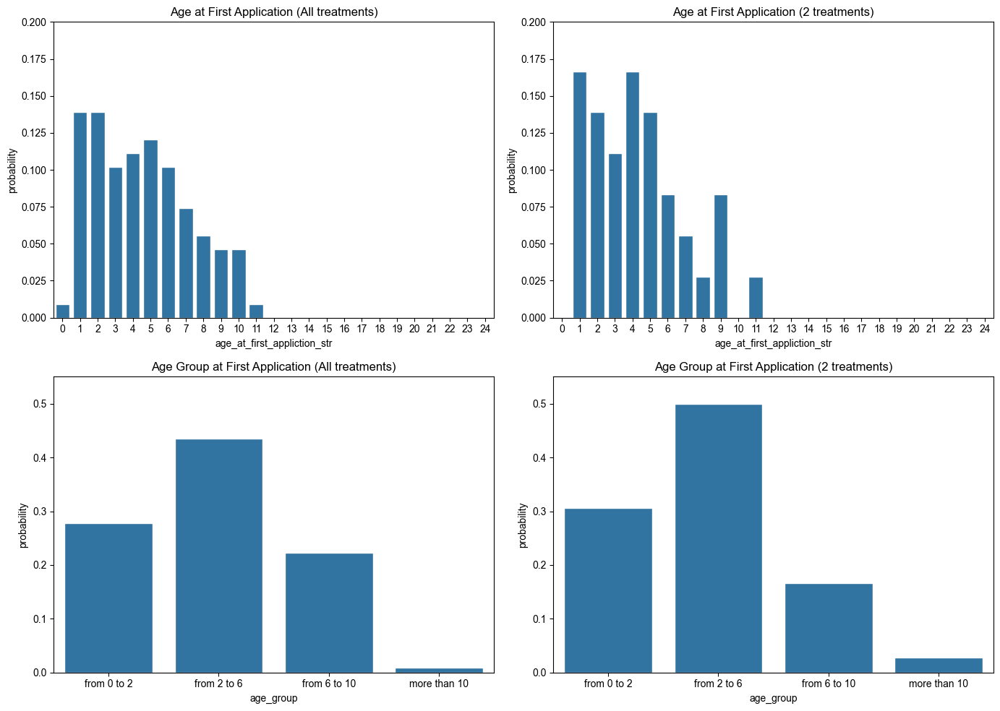

What is the average time between the first and the second therapy application among patients?
Code
import pandas as pdimport numpy as npimport matplotlib.pyplot as pltimport seaborn as snsimport re# Data preparation# Before the analysis some values were removed by hand. Some "?"'s were removed and incomplete dates were removed# 1. treatment of 'First application date'data = pd.read_excel("Tk Korneuburg_Stammzellpatienten_09102024_anon_en.xlsx")data['Sample collection date'] = pd.to_datetime(data['Sampling'], errors='coerce')imputed_days_value =22# Convert imputed_days_value to a timedeltatimedelta_value =pd.to_timedelta(imputed_days_value, unit='D')data['first_application_data_cleaned'] = np.nandata['first_application_data_cleaned'] = data['Sample collection date'] + timedelta_value
C:\Users\justb\AppData\Local\Temp\ipykernel_26176\2111960275.py:12: UserWarning: Parsing dates in %d.%m.%Y format when dayfirst=False (the default) was specified. Pass `dayfirst=True` or specify a format to silence this warning.
data['Sample collection date'] = pd.to_datetime(data['Sampling'], errors='coerce')
Code
# Remove dates where second application date happened before first application date.data['Second application date'] = pd.to_datetime(data["2nd_treatment"], errors='coerce')data.loc[data['Second application date']<=data['first_application_data_cleaned'],'Second application date'] =Nonedata["age_at_first_appliction"] = (data['first_application_data_cleaned'].dt.year - data["Year of birth"])data["age_at_first_appliction_str"] = data["age_at_first_appliction"].astype(str)data["age_at_first_appliction_str"] = data["age_at_first_appliction_str"].str.replace(".0", "")# Create age groups:# Age groups# od 0 do 2 let,# od 2 do 6 let,# od 6 do 10 let,# več kot 10 let.data.loc[data["age_at_first_appliction"].astype(bool),"age_group"] ="from 0 to 2"data.loc[2< data["age_at_first_appliction"],"age_group"] ="from 2 to 6"data.loc[6< data["age_at_first_appliction"],"age_group"] ="from 6 to 10"data.loc[10< data["age_at_first_appliction"],"age_group"] ="more than 10"data.loc[data["age_at_first_appliction"].isnull(),"age_group"] ="unkown"
Code
from github_repo import analysis_of_indications# Normalize indications.data['Indication_list'] = data['Diagnosis'].apply(analysis_of_indications.normalize_text)
# Analyste dates between 1st and 2nd treatment.data_with_dates = data[~data['first_application_data_cleaned'].isnull()]data_with_2nd_dates = data_with_dates[~data_with_dates['Second application date'].isnull()]# Get days differemce to int.data_with_2nd_dates = data_with_2nd_dates[data_with_2nd_dates['Second application date']>data_with_2nd_dates['first_application_data_cleaned']]data_with_2nd_dates["1st-2nd-treatment_days"] = (data_with_2nd_dates['Second application date']-data_with_2nd_dates['first_application_data_cleaned']).dt.days# print(f"Wrong dates {sum(data_with_2nd_dates['Second application date']<data_with_2nd_dates['Sample collection date'])}")data_with_2nd_dates["1st-2nd-treatment_months"] = data_with_2nd_dates["1st-2nd-treatment_days"]/30
Among the patients, there are 36 with at least two treatments. The distribution of days between the second and first application is shown in the image Figure 1. The median number of days is 494, and the average is 660 days.
Code
print(f"The number of patients with two treatments is {len(data_with_2nd_dates['1st-2nd-treatment_days'])}")print(f"The number of patients who returned before the 500th day is {sum(data_with_2nd_dates["1st-2nd-treatment_days"]<501)}")print(f"Median values of treatments is {data_with_2nd_dates["1st-2nd-treatment_days"].median()}")print(f"Mean values of treatments is {data_with_2nd_dates["1st-2nd-treatment_days"].mean()}")
The number of patients with two treatments 36
The number of patients who returned before the 500th day 19
Median values of treatments is 494.0
Mean values of treatments is 660.8333333333334
Code
# Creating the histogram.plt.figure(figsize=(10, 6))plt.hist(data_with_2nd_dates["1st-2nd-treatment_days"], bins=14, edgecolor='black')plt.title("Histogram of Days Between 1st and 2nd Treatment")plt.xlabel("Days between 1st and 2nd Treatment")plt.ylabel("Frequency")plt.show()
Figure 1: Histrogram of days between 1st and 2nd treatment
Since the data quickly becomes fragmented, the number of days between the first and second therapy is divided into 4 groups:
less than 1 year – comparable,
from 1 to 1.5 years – good,
from 1.5 to 2 years – very good,
more than 2 years – excellent.
From the histogram Figure 2, it is evident that the most numerous group is “excellent.”
In the table Table 1, you can find the treatments from the “comparable” group.
Code
# Kategorije glede na uspešnost# manj kot 1 leto – comparable,# od 1 do 1,5 leta – good,# od 1,5 do 2 leti – very good,# več kot 2 leti – excellent.# data_with_2nd_dates.loc[data_with_2nd_dates["age_group"] == age_group, "1st-2nd-treatment_days"]data_with_2nd_dates["success_of_therapy"]="comparable"data_with_2nd_dates.loc[data_with_2nd_dates["1st-2nd-treatment_days"]>360, "success_of_therapy"]="good"data_with_2nd_dates.loc[data_with_2nd_dates["1st-2nd-treatment_days"]>540, "success_of_therapy"]="very good"data_with_2nd_dates.loc[data_with_2nd_dates["1st-2nd-treatment_days"]>720, "success_of_therapy"]="excellent"sucess_groups = ["comparable", "good", "very good", "excellent"]sns.countplot(data_with_2nd_dates, x="success_of_therapy", order=sucess_groups)plt.show()
Figure 2: Distribution of sucess groups.
Code
from IPython.display import displaytable_of_interest = data_with_2nd_dates.loc[data_with_2nd_dates["success_of_therapy"]=="comparable",["Sampling", "Diagnosis", "Number of joints treated", "Comments Feedback from owners",'follow up injections']]pd.set_option('display.max_colwidth', None)display(table_of_interest)
Table 1: Potek klasifikacije
Sampling
Diagnosis
Number of joints treated
Comments Feedback from owners
follow up injections
49
10.04.2019
Knee osteoarthritis
1.0
The 2nd stem cell therapy has once again been very successful, although we actually only wanted to maintain the "current state". He is not taking any painkillers and has a great zest for life again! Thank you very much for this great therapy!!! (feedback 29.06.2020)
Gonarthrosis on both sides ; Tarsal joint arthrosis
3.0
glecihbleibend, deceased
14.07.2020, 3 joints
56
27.11.2019
ED
1.0
Kiwi is doing very well, it is very rare to see a slight lameness. Mostly when he has been running across the fields at a stretched canter. But after a short rest he is fine again. Deceased
10.03.2020, 3joints
66
14.07.2020
Gonarthrosis on both sides ; OCD
1.0
unfortunately died of spleen tumor shortly after therapy, therefore not known if stem cells would have helped
7.10.2020in both hips 4 mio Sz+ 2ml synochrome each
74
05.10.2020
Cubarthrosis bds
2.0
NaN
20.10.2021 2 joints
77
2021-01-12 00:00:00
bds HD + coxarthrosis
2.0
Toni is doing very well and is symptom-free
27.4.2021 in both arches yes 2mio sz
81
2021-01-20 00:00:00
Cubarthrosis on both sides
2.0
improvement
04.08.2021: 2x knees; 30.05.2023: 4 joints
82
2021-01-26 00:00:00
Coxarthrosis, gonarthrosis
2.0
PB does not know what helped stem cells or KBr on the same knee, improvement only after knee surgery
17.08.2021 right knee
103
2023-03-01 00:00:00
FCP Elbow right
2.0
this is already the 2nd dog of Mrs. Ververides for stem cells with you
18.04.2023: 1 joint
Are there significant patterns in time intervals regarding the age of patients?
The distribution of age at the first application is shown in the image Figure 3. In the left column of graphs, we have all patients, while in the right column, we have only patients who received two treatments. From the first row of graphs, it can be observed that the distribution is skewed towards the right. Patients who received two treatments are somewhat younger. We divided the patients into four age groups:
1. 0 to 2 years,
2. 2 to 6 years,
3. 6 to 10 years,
4. more than 10 years.
Code
# Plot age at first applicationfig, axes = plt.subplots(2, 2, figsize=(14, 10)) # Adjust figure size as neededordered_age_groups = ["from 0 to 2", "from 2 to 6", "from 6 to 10", "more than 10"]# Plot 1: Age at first application from datasns.set(style="darkgrid")sns.countplot(x="age_at_first_appliction_str", data=data, order=[str(age) for age inrange(25)], ax=axes[0, 0], stat="probability")axes[0, 0].set_title("Age at First Application (All treatments)")axes[0, 0].set_ylim(0, 0.20)# Plot 2: Age group at first application from datasns.countplot(x="age_group", data=data, order=ordered_age_groups, ax=axes[1, 0], stat="probability")axes[1, 0].set_title("Age Group at First Application (All treatments)")axes[1, 0].set_ylim(0, 0.55)# Plot 3: Age at first application from data_with_2nd_datessns.countplot(x="age_at_first_appliction_str", data=data_with_2nd_dates, order=[str(age) for age inrange(25)], ax=axes[0, 1], stat="probability")axes[0, 1].set_title("Age at First Application (2 treatments)")axes[0, 1].set_ylim(0, 0.20)# Plot 4: Age group at first application from data_with_2nd_datessns.countplot(x="age_group", data=data_with_2nd_dates, order=ordered_age_groups, ax=axes[1, 1], stat="probability")axes[1, 1].set_title("Age Group at First Application (2 treatments)")axes[1, 1].set_ylim(0, 0.55)# Adjust layoutplt.tight_layout()plt.show()

Figure 3: Distribution of ages at first applicaiton
Code
import numpy as npimport matplotlib.pyplot as plt# Define the bin edges manually, for example:min_days = data_with_2nd_dates["1st-2nd-treatment_days"].min()max_days = data_with_2nd_dates["1st-2nd-treatment_days"].max()bins = np.linspace(min_days, max_days, 15) # 14 bins# Create a 2x2 grid of subplotsfig, axes = plt.subplots(2, 2, figsize=(10, 8)) # 2 rows, 2 columnsaxes = axes.flatten() # Flatten the 2D array of axes to iterate more easily# Loop through age groups and axes simultaneouslyfor i, age_group inenumerate(ordered_age_groups):# Filter the data for the specific age group plot_data = data_with_2nd_dates.loc[data_with_2nd_dates["age_group"] == age_group, "1st-2nd-treatment_days"]# Calculate the mean and median mean_value = plot_data.mean() median_value = plot_data.median() ax = axes[i] # Select the correct subplot# Plot the histogram ax.hist(plot_data, bins=bins, edgecolor='black', density=True, alpha=0.9, label=f"Age Group: {age_group}")# Add vertical lines for mean and median mean_line = ax.axvline(mean_value, color='blue', linestyle='--', label=f'Mean: {mean_value:.1f}') median_line = ax.axvline(median_value, color='red', linestyle='-', label=f'Median: {median_value:.1f}')# Set titles and labelsdat ax.set_ylim(0, 0.0020) ax.set_title(f"Age Group: {age_group}, n={plot_data.shape[0]}") ax.set_xlabel("Days between 1st and 2nd Treatment") ax.set_ylabel("%")# Add a legend that includes the mean and median lines ax.legend()# Adjust layout to prevent overlapplt.tight_layout()# Display the
Figure 4: Distribution of days between first and second application relative to the age group of patients.
Code
sns.countplot(data_with_2nd_dates, x="success_of_therapy", hue="age_group",order=sucess_groups)plt.show()# Create a 2x2 grid of subplots
Figure 5: Counts of sucess groups relative to the age group of patients.
Code
fig, axes = plt.subplots(2, 2, figsize=(10, 8)) # 2 rows, 2 columnsaxes = axes.flatten() # Flatten the 2D array of axes to iterate more easily# Loop through age groups and axes simultaneouslyfor i, age_group inenumerate(ordered_age_groups):# Filter the data for the specific age group plot_data = data_with_2nd_dates.loc[data_with_2nd_dates["age_group"] == age_group,] ax = axes[i] # Select the correct subplot# Plot the histogram sns.countplot(x="success_of_therapy", data=plot_data, order=sucess_groups, ax=ax, stat="probability")# Set titles and labels ax.set_title(f"Success of therapy age Group: {age_group}, n={plot_data.shape[0]}") ax.set_xlabel("Success group") ax.set(ylim=(0, 1)) ax.set_ylabel("%")# Adjust layout to prevent overlapplt.tight_layout()
Figure 6: Distribution of sucess groups relative to the age group of patients.
Are there significant patterns in time intervals regarding the initial severity of the condition?
Variable “Indication” is classified into 13 indication groups:
1. OCD - Osteochondritis Disecans,
2. OA - Osteoarthritis,
3. Cubarthrosis,
4. Omarthrosis,
5. Gonarthrosis,
6. Coxarthrosis,
7. CCL - cranial cruciate ligament,
8. FCP - Fragmented Coronoid Proces,
9. HP - Hip dysplasia,
11. ED - Elbow dysplasia,
12. Arthritis,
13. Other.
Some patients were assigned to multiple groups. Every patient with Gonarthrosis also has Osteoarthritis. We have more patients with Elbow dysplasia and Cubarthrosis.
From the image Figure 7, it is evident that the highest number of patients has Osteoarthritis. We can also see that there are no significant differences in the distribution between patients who received one treatment or two treatments.
Code
data_exploded = data.explode('Indication_list').reset_index()data_with_2nd_dates_exploded = data_with_2nd_dates.explode('Indication_list').reset_index()# Plot age at first applicationfig, axes = plt.subplots(1, 2, figsize=(14, 10)) # Adjust figure size as neededordered_indication_groups = ["OCD", "OA", "Cubarthrosis", "Omarthrosis", "Gonarthrosis", "Coxarthrosis", "CCL", "FPC", "HD", "ED", "Arthritis", "Other"]# Plot 1: Indication group from dataplot1 = sns.countplot(x="Indication_list", data=data_exploded, order=ordered_indication_groups, ax=axes[0], stat="probability")axes[0].set_title("Indication at First Application (All treatments)")axes[0].set_ylim(0, 0.4)axes[0].set_xticklabels(axes[0].get_xticklabels(), rotation=45, ha="right")# Add counts above each bar for Plot 1for p in plot1.patches: axes[0].annotate(f'{int(p.get_height() *len(data_exploded))}', # Calculate total counts (p.get_x() + p.get_width() /2., p.get_height()), ha='center', va='baseline', fontsize=10, color='black', xytext=(0, 3), textcoords='offset points')# Plot 2: Age group at first application from dataplot2 = sns.countplot(x="Indication_list", data=data_with_2nd_dates_exploded, order=ordered_indication_groups, ax=axes[1], stat="probability")axes[1].set_title("Indication at First Application (2 visits)")axes[1].set_ylim(0, 0.4)axes[1].set_xticklabels(axes[1].get_xticklabels(), rotation=45, ha="right")for p in plot2.patches: axes[1].annotate(f'{int(p.get_height() *len(data_with_2nd_dates_exploded))}', # Calculate total counts (p.get_x() + p.get_width() /2., p.get_height()), ha='center', va='baseline', fontsize=10, color='black', xytext=(0, 3), textcoords='offset points')plt.tight_layout()plt.show()
C:\Users\justb\AppData\Local\Temp\ipykernel_26176\622326127.py:17: UserWarning: set_ticklabels() should only be used with a fixed number of ticks, i.e. after set_ticks() or using a FixedLocator.
axes[0].set_xticklabels(axes[0].get_xticklabels(), rotation=45, ha="right")
C:\Users\justb\AppData\Local\Temp\ipykernel_26176\622326127.py:31: UserWarning: set_ticklabels() should only be used with a fixed number of ticks, i.e. after set_ticks() or using a FixedLocator.
axes[1].set_xticklabels(axes[1].get_xticklabels(), rotation=45, ha="right")
Figure 7: Distribution of indications before first application
5. Number of treated joints:
How many joints are typically treated during the initial therapy, and how many are treated in subsequent therapies?
Code
### Counts of numbers of joints treated in first tratement